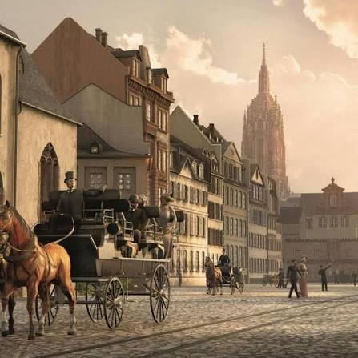

Contexto Histórico y Filosofía del Siglo XIX

El contexto histórico de este autor y más específicamente de esta obra es que surge la crisis del idealismo. El idealismo al ser una corriente filosófica que se basa todo en la razón sufre una crisis después de ser confrontada por varias otras corrientes. La obra se redacta en la década de 1820 en un periodo llamado la restauración europea que vino después de la era napoleónica. Es una era donde el comercio y la burguesía industrial asciende de una manera inimaginable al poder económico y consolida una fe ciega en el progreso técnico, el materialismo y el éxito social. Algo que para muchos pensadores no sería muy convincente. Al no verse tan convincente esto, el clima intelectual alemán está marcado por la desilusión, más que nada por las promesas incumplidas de la Revolución Francesa y las guerras napoleónicas. Schopenhauer escribe desde los márgenes de su obra criticando que la sociedad académica se ha vuelto mercantilista. Su obra refleja el aislamiento del individuo el cual está alienado en ciudades industriales y esto obliga al sujeto a buscar refugio en la autonomía interior en un entorno hostil.